This guide is intended to supply a general overview of the web-interface structure and functionality. Please visit the INFO section for further information on the contents of the Catalogue.


The general structure of the web-interface follows the scheme shown below. The three frames on the left are the three types of access to the contents of the CFTI catalogue (page of access to the list of earthquakes, localities or effects on the natural environment), while the two frames on the right are the pages that describe an individual earthquake or locality. The red arrows indicate the connections between the different page types.
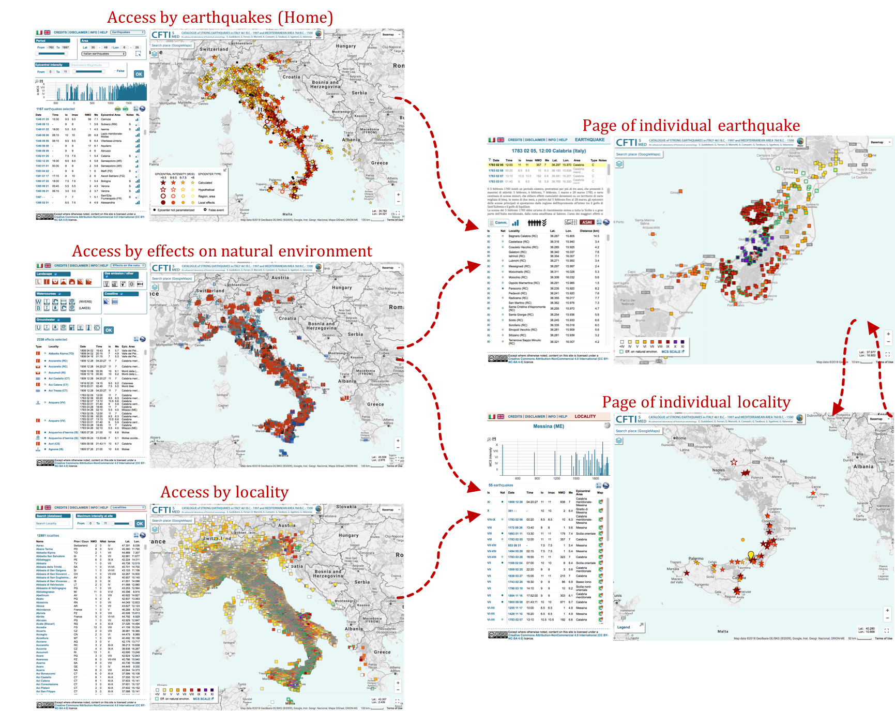
All web-pages have a similar structure (see figure below), consisting of an informative section on the left (a selection panel and/or tables and/or additional information) and a map on the right, showing markers of earthquakes / localities / effects on the natural environment / macroseismic observations. all are listed in the table located in the left frame.
The left frame also hosts two icons that allow the selected data to be exported in text or kml format.
Additional tools on the map include:
- Geographic search box (based on Google Maps)
- Two buttons to add map overlays:
- the top button opens a list of map overlays that can be displayed on the basemap (note that the availability of some layers is scale-dependent):
- Borders of Italian Comuni ISTAT 2016
- Borders of Italian Province ISTAT 2016
- Borders of Italian Regioni ISTAT 2016
- IGM topographic map at 1:25,000 scale (from Portale Cartografico Nazionale – PCN)
- IGM topographic map at 1:100,000 scale (from PCN)
- DISS Individual Seismogenic Sources – ISS (from INGV)
- DISS Composite Seismogenic Sources – CSS (from INGV)
- DISS Subduction Zones (from INGV)
- Geologic map at 1:100,000 scale (from ISPRA)
- Landslide catalogue (from PCN), with a web-interface that can be displayed by clicking on the "Legend" button
- the other button opens a window that allows the user to add to the map the instrumental earthquake locations supplied by the surveillance service of INGV (between 1985 and today), based on queries made through a selection panel. The epicenters are shown on the map after hitting the 'OK' button. The figure below shows an example of a map with CFTI5 epicenters, instrumental earthquake locations and the DISS Composite Seismogenic Sources.
- A legend of map markers
- A dropdown menu for the selection of Google basemaps
- A box displaying the geographical coordinates of the mouse pointer on the map.
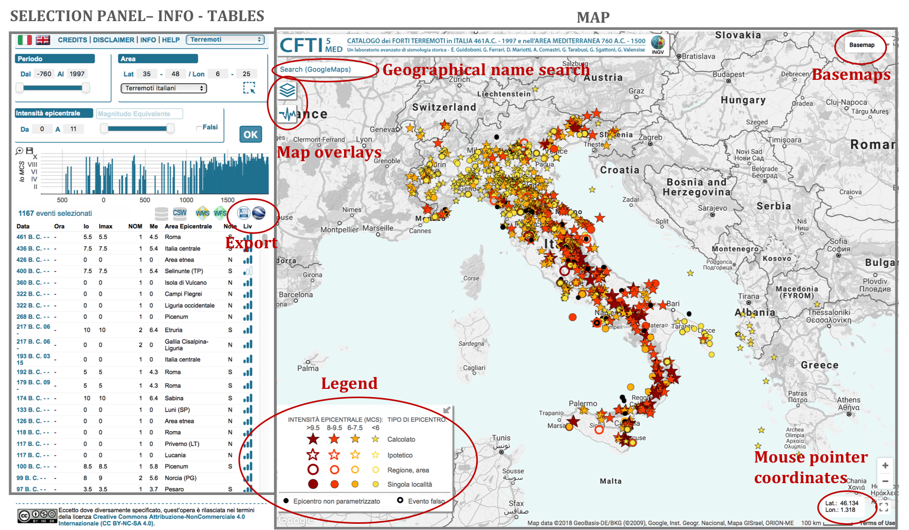
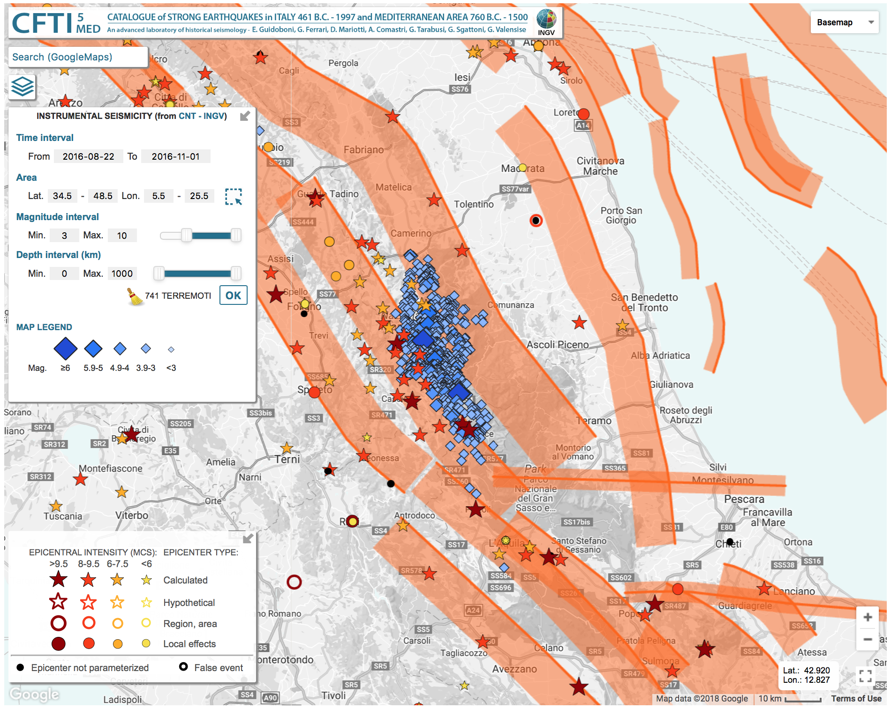
In all types of pages, all markers and some table elements are clickable. By clicking on them, an informative window (infowindow) is displayed on the map (connected to the corresponding marker) and the corresponding table line is highlighted in yellow. The infowindow contains information on the selected earthquake / locality / macroseismic observation / effects on the natural environment and direct links to the page of individual locality and/or individual earthquake. The figure below shows the connections between all different types of pages through the links contained in the infowindows.
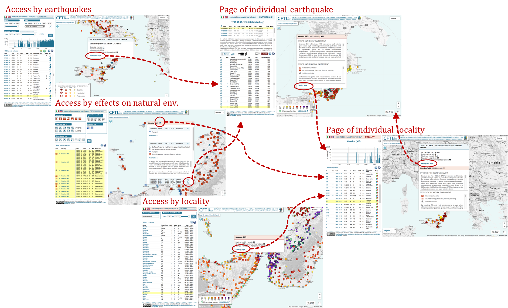
The infowindows contain also texts (historical-critical comments) describing the effects of the earthquakes on the built and natural environment. The references to relevant bibliography (referred to in the text with numbers) are listed below each text, followed by a link to the corresponding pdf file, when available. Each bibliographic source may be available either as a transcribed text (PDF_T), or as a scanned copy of the original source (PDF_R), or both. The pdf files can be accessed by clicking on the "PDF_T" and/or "PDF_R" links (see figure below).
Through a link contained in the header of all pdf files, the user can access the referencing information needed to use the material provided (see figure below).
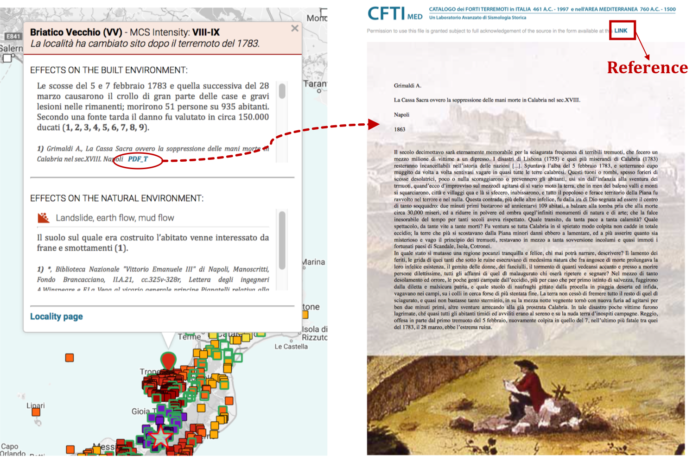
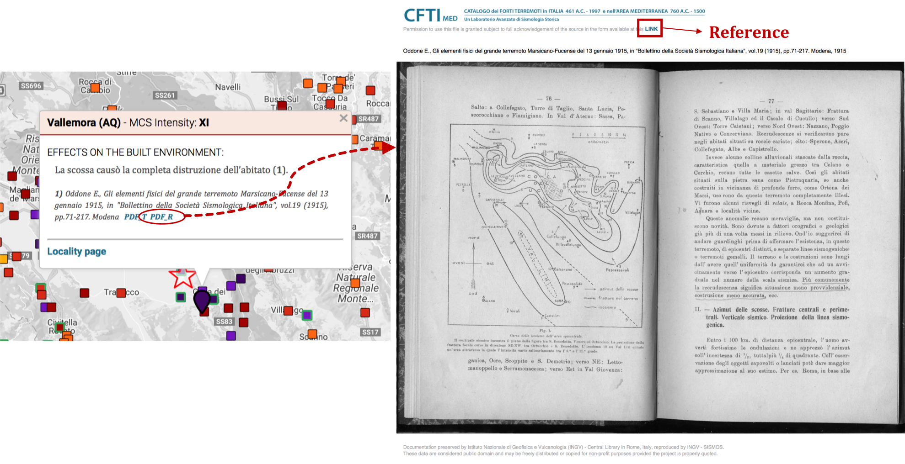
Following are some useful tips:
- clicking on the CFTI5Med banner on top of all pages brings you back to the home page (Access by earthquake page);
- the navigation is guided by contextual help messages that appear any time the mouse rolls over an icon, table header, query section, etc;
- all tables are sortable by clicking on any column header;
- hit the 'OK' button to run a query set through the selection panels for all three modes of access to the catalogue information);
- the background colors of infowindow titles indicate the type of information given. All information on earthquakes is shown with a light blue title, while information on localities is shown with a light red title. The same colors are used as a background for the info|disclaimer|help menu on the top-left corner of the pages showing individual localities and individual earthquakes and for the pages of access by earthquake and locality;
- map locations are given with geographical coordinates (WGS84) in degrees rounded to three decimal places;
- clicking on epicentral markers that overlap or are very close turns them blue: the symbols are displayed in a circle, with black bars connecting them to their original position. Their size, that is proportional to epicentral intensity following the size scheme shown in the legend, remains unchanged. Similarly to any other markers on the map, clicking on a blue marker opens an infowindow, (see figure below).
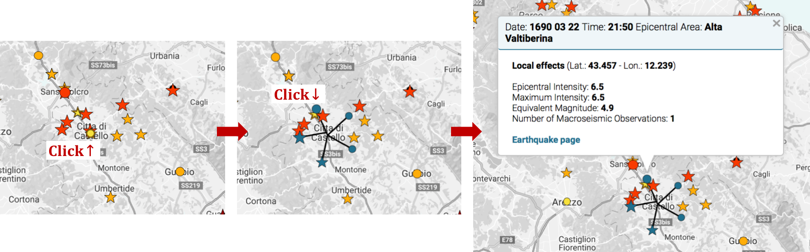
A dropdown menu in the top-left corner of the page allows the user to choose whether to access the Catalogue contents by earthquakes, by locality or by effects on the natural environment (see figure below). The page loaded on startup of the web-interface is the access by earthquakes.
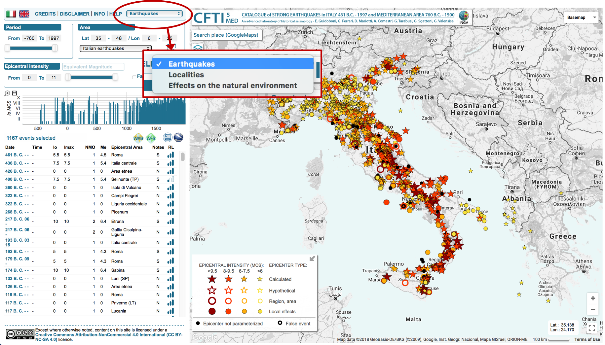
The three types of access have a similar structure consisting of:
- SELECTION PANEL: located in the top-left frame, it allows database search by different criteria explained in the following sections of this guide (hit the "OK" button to apply the query);
- TABLE: located below the selection panel, it contains the list of earthquakes / localities / effects on the natural environment selected by the user;
- MAP: contains the markers corresponding to the table lines.
The page of access by earthquake is the home page of the web-interface and allows the user to query and display the list of earthquakes contained in the CFTI database. Database queries can be made through the selection panel. By default, on startup the page shows strong earthquakes (epicentral intensity equal to or bigger than VIII-IX on the MCS scale) in the Italian region only. For further information on the epicenter types see section Location of individual earthquakes: typologies and map representation of the INFO page.
By clicking on an earthquake, either a line of the table (date of the earthquake) or a marker on the map, an informative window is displayed (connected to the marker) containing general information on that earthquake, plus a direct link to the page describing it in detail (by clicking on "Earthquake page").
The selection panel on the top-left corner of the page allows the user to make queries in the earthquake database based on the following criteria:
- Time period: for the Italian earthquakes the time range is 461 B.C.-1997, while for Mediterranean earthquakes it is 760 B.C. - 1500
- Area: the user can make queries by setting latitude and longitude bounds or by using a graphic rectangle that is displayed on the map by clicking on the corresponding button (see figure below). From the dropdown menu the user can choose whether to display only Italian, only Mediterranean or all earthquakes. Italian earthquakes are meant to be events located in Italy or in the Mediterranean area but causing effects in Italy, while Mediterranean earthquakes are all events causing effects only outside Italy.
- Epicentral intensity or equivalent magnitude: these two queries are alternative. By default, the active query is by epicentral intensity. The user can activate the selection by magnitude by clicking on the corresponding button. The user can also include false events in the selection by activating the related check-box.
The 'WMS' e 'WFS' icons allow the user to access the OGC web services for the entire Catalogue (all epicentral parameters of the CFTI5Med catalogue). When clicking an icon, the link to the corresponding OGC service is displayed and copied to the clipboard.
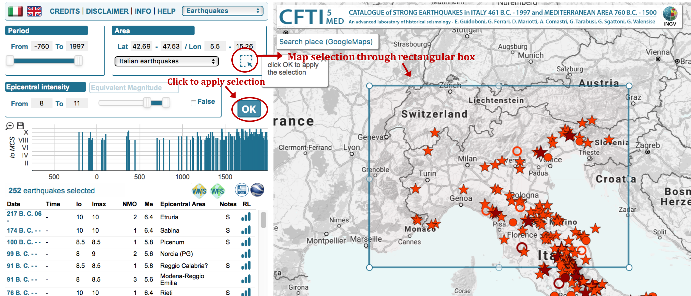
A timeline chart showing the intensity vs time distribution of the selected earthquakes is displayed between the selection panel and the table. Rolling-over the mouse along the bars returns the epicentral information for each displayed earthquake . The chart contains the same events listed in the table and shown on the map. By clicking on the icons in the top-left corner of the chart the user may enlarge the graph horizontally and save it as a .png image.
The table lists the earthquakes selected by the user through the above selection panel. For each earthquake, the following information is given:
- Date: earthquake origin date (year month day)
- Time: earthquake origin time expressed as Greenwich Mean Time (hour:minutes:seconds)
- Io: epicentral intensity (MCS)
- Imax: maximum Intensity (MCS)
- NMO: Number of Macroseismic Observations for the given earthquake
- Me: equivalent magnitude based on macroseismic observations
- Epicentral area
- Notes:
- F: false
- D: doubtful
- S: epicentral parameters based on a single intensity datapoint
- E: epicentral location from foreign catalogue
- N: no macroseismic observations available
- Liv: review level of the study
 high
high medium
medium low
low
This page allows the user to view all localities contained in the CFTI database and search among them. Each locality is shown in the map with a color corresponding to its maximum intensity (MCS) reported in the Catalogue. Database queries can be made using the selection panel. By default, all localities in the database are shown in the map and listed in the table.
By clicking on a locality, either a line of the table (locality name) or a marker on the map, an informative window is displayed, containing information on the locality and a direct link to the page of the individual locality (by clicking "Locality page").
The selection panel in the top-left corner of the page allows the user to search for a specific locality (by typing its name in the search box) or make a query based on a maximum intensity interval. The query, applied by hitting the "OK" button, modifies the localities listed in the table and displayed in the map.
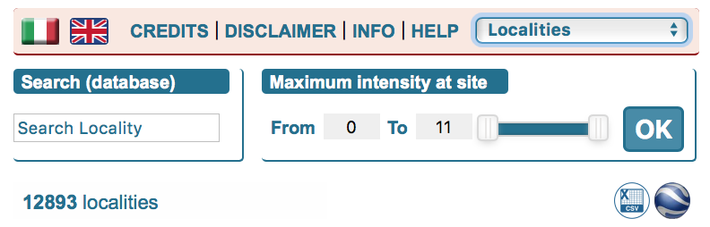
The table lists the localities selected by the user through the above selection panel. By default, all localities of the database are shown. For each locality, the following information is given:
- Locality: name of locality
- Prov/Coun: Italian Province / foreign Country
- NMO: Number of Macroseismic Observations available for the given site
- NNat: Number of effects on the Natural environment
- Imax: Maximum Intensity reported at the given site (MCS scale)
- Lat: latitude of locality
- Lon: longitude of locality
This page allows the user to view all earthquake-induced effects on the natural environment contained in the CFTI database. They are shown in the map with symbols related to the type of observed natural phenomenon. All symbols are listed in the selection panel located in the top-left corner of the page (a description for each of them is shown at mouse roll-over). By default, on start up all effects contained in the database are shown in the map and listed in the table. Queries can be made through the selection panel.
By clicking a locality, either a line of the table (name of locality) or a marker on the map, an informative window is displayed listing all effects reported at the given locality (i.e. related to all the earthquakes that caused effects on the natural environment at the given locality). All lines of the table corresponding to the effects listed in the infowindow are highlighted in yellow. From the infowindow the user can access the page of each individual locality (through a link next to the locality name) and each individual earthquake (through the link next to each listed earthquake).
The selection panel contains buttons corresponding to all types of effects on the natural environment. A short description of each of them is shown at mouse roll-over. The user can select (colored icon) or deselect (gray icon) each of them simply by clicking the icons or select/deselect groups of effects with the check-boxes next to the title of each panel. The query, applied by hitting the "OK" button, modifies the list of effects listed in the table and displayed in the map.
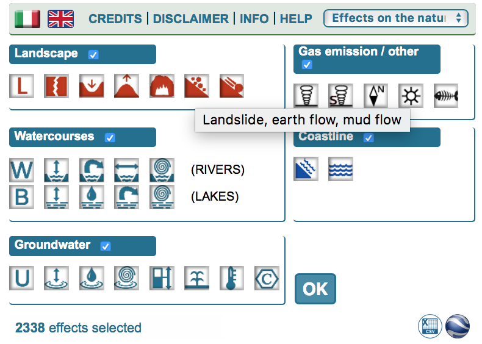
The table lists the effects on the natural environment selected by the user through the above selection panel. By default, all effects contained in the database are shown.
- Type: type of effect on the natural environment, represented by an icon to the left of the column. A full dot or a circle to the right indicates effects associated with an individual earthquake or with a whole earthquake sequence, respectively.
- Date: earthquake origin date (year month day)
- Time: earthquake origin time expressed as Greenwich Mean Time (hour:minutes:seconds)
- Io: epicentral intensity (MCS scale)
- Me: equivalent magnitude based on macroseismic observations
- Epicentral area
This page describes the effects of the given earthquake on the built and natural environment. The structure of the page is shown in the figure below and consists of:
- Parameters of the earthquake and of the entire earthquake sequence: table with parameters for the given earthquake and for all earthquakes reported in the Catalogue as belonging to the same earthquake sequence. The given earthquake (shown in the map) is highlighted in yellow. The table contains the following information:
- Date: earthquake origin date (year month day)
- Time: earthquake origin time expressed as Greenwich Mean Time (hour:minutes:seconds)
- Io: epicentral intensity (MCS)
- Imax: maximum intensity (MCS)
- NMO: Number of Macroseismic Observations
- Me: equivalent magnitude based on macroseismic observations
- Epicentral area
- Epicenter type:
- C: calculated
- L: local effects
- R: region, area
- H: hypothetical
- NP: not parameterized
- Notes:
- F: false
- D: doubtful
- S: epicentral parameters based on a single intensity datapoint
- E: epicentral location from foreign catalogue
- N: no macroseismic observations available
- Information on effects: located below the table listing the parameters of the earthquake sequence, it consists of a text describing the main effects of the earthquake sequence, plus a button ('Comm.') that opens a window with further information on the sequence and icons describing various aspects of the earthquake sequence (casualties, level of review, differences compared to the previous version of the Catalogue: see below for further information). When historical-critical comments are not available, a text describing the state of the review and a reference to the relevant literature (when available) is shown.
- External links to the Italian parametric earthquake catalogue and its corresponding database (CPTI15-DBMI15, Catalogo Parametrico dei Terremoti Italiani 15 - DataBase Macrosismico Italiano 15) and the Italian historical macroseismic archive (ASMI, Archivio Storico Macrosismico Italiano) are shown with the following icons (a text displayed at mouse roll-over explains the different possible cases described below; see Relations of CFTI5Med with CPTI and ASMI of the INFO page for further details):
 earthquake is available in ASMI. The icon is clickable and redirects the user to the corresponding ASMI webpage;
earthquake is available in ASMI. The icon is clickable and redirects the user to the corresponding ASMI webpage; earthquake is not available in ASMI. The icon is not clickable;
earthquake is not available in ASMI. The icon is not clickable; CFTI4Med is the reference study for CPTI15-DBMI15 for the given earthquake and the parameters reported in CFTI5Med are exactly the same as in CFTI4Med. The icon is clickable and takes the user to the corresponding page of CPTI15;
CFTI4Med is the reference study for CPTI15-DBMI15 for the given earthquake and the parameters reported in CFTI5Med are exactly the same as in CFTI4Med. The icon is clickable and takes the user to the corresponding page of CPTI15; CFTI4Med is not the reference study for CPTI15-DBMI15 for the given earthquake or CFTI4Med is the reference study but the distribution of intensities has been modified in CFTI5Med with respect to CFTI4Med. The icon is not clickable;
CFTI4Med is not the reference study for CPTI15-DBMI15 for the given earthquake or CFTI4Med is the reference study but the distribution of intensities has been modified in CFTI5Med with respect to CFTI4Med. The icon is not clickable; earthquake not included in CPTI15-DBMI15 or that occurred before the year 1000, a time interval that is not considered by CPTI15-DBMI15. The icon is not clickable.
earthquake not included in CPTI15-DBMI15 or that occurred before the year 1000, a time interval that is not considered by CPTI15-DBMI15. The icon is not clickable.
- Table of earthquake effects: list of localities for which macroseismic observations and/or effects on the natural environment are available for the given earthquake (see below for further details)
- Map of effects: all localities listed in the table are shown in the map with an color-coded icon by MCS intensity, following the scheme shown in the legend located in the bottom-left corner of the map. The icons with green edge indicate effects on the natural environment. A link in the map legend takes the user to a description of the MCS scale (Mercalli-Càncani-Sieberg 1932).
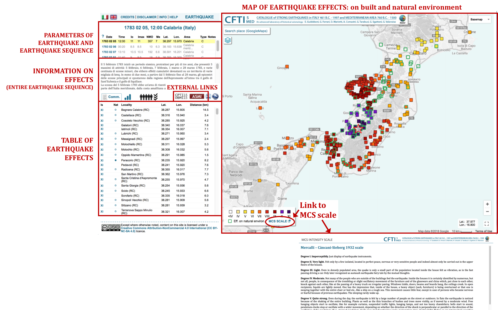
As shown in the figure below, by clicking a locality, either a line of the table (intensity or dot indicating effects on natural environment) or a marker on the map, an informative window is displayed, containing information on the effects of the given earthquake at the locality (both on the built and on the natural environment) and a direct link to the page of the individual locality (by clicking on "Locality page"). The description of the effects on the built environment and the list of effects on the natural environment can be seen also at mouse roll-over on the intensity and (when present) on the dot indicating the effects on the natural environment in the table. Note that, for the effects on the natural environment, the text displayed at roll-over is only a list of the types of effects, while the informative window contains both the list and a descriptive text (and relevant bibliography).
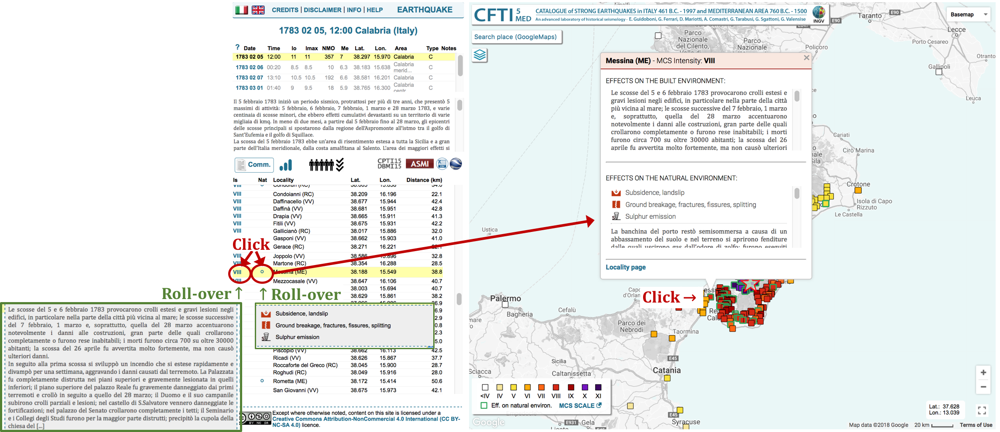
The table lists all localities for which macroseismic observations and/or effects on the natural environment are reported for the given earthquake. It contains the following information:
- Is: MCS intensity at the site, for the given earthquake. In addition to the MCS degrees, in some cases other letters are used, based on the following list:
- S(V) strongly felt, but lacking evidence to support or deny the occurrence of damage
- F(IV-V) felt
- NF not felt
- G generic indication of damage at a specific site
- N no evidence found in contemporary sources
- NC unrated: please refer to the analytical comments for further info Effects on a single building:
- A(IX) collapse or extensive damage to the load bearing walls
- B(VIII) collapse of the top portion of the building (lantern, dome, gable, etc.)
- C(VII) partial collapse of the roof, vaults, apsidal vault, etc.
- D(VI) falling eaves, cracking of the external walls
- E(VI-VII) report of generic damage to the building
- Nat: earthquake-induced effects on the natural environment. When reported, they are indicated with a full dot (if associated with a single earthquake) or a circle (if associated with the entire earthquake sequence)
- Locality: name of locality and Italian Province/foreign Country
- Lat: latitude of locality
- Lon: longitude of locality
- Distance (km): distance of locality from macroseismic epicenter
It has to be noted that the descriptive information reported in the page available for any individual earthquake in fact refers to the entire earthquake sequence. By hitting the 'Comm.' button, a window is opened that contains all historical-critical comments available and the relevant bibliography (see figure below). These comments are organized into different sections that can be partially or fully available for the different earthquake sequences of the Catalogue. The sections, shown in different tabs of the window, are (see Earthquake information of the INFO page for further details):
- Sequence
- Review
- Social and institutional response
- Theories and observations
- Effects on the built environment
- Effects on the natural environment
The bibliography for the earthquake sequence is listed in a table containing the following columns (see Area 7. Bibliography of the INFO page for further details):
- Author
- Title
- Type of source
- Year
- Place
- PDF_T: link to PDF file of transcribed original text, when available
- PDF_R: link to PDF of the scanned source, when available
For the earthquakes that occurred in the Mediterranean region outside Italy, in the same window we provide instead a digital excerpt of the relevant text supplied in Guidoboni et al. (1995) and Guidoboni e Comastri (2005).
When casualties are known to have occurred for the given earthquake, an icon to the right of the "Comm." button is shown, indicating an estimate of the number of victims and its reliability. A description of this information is shown at roll-over on the icon (see Data on the number of victims of the INFO page for further detail).
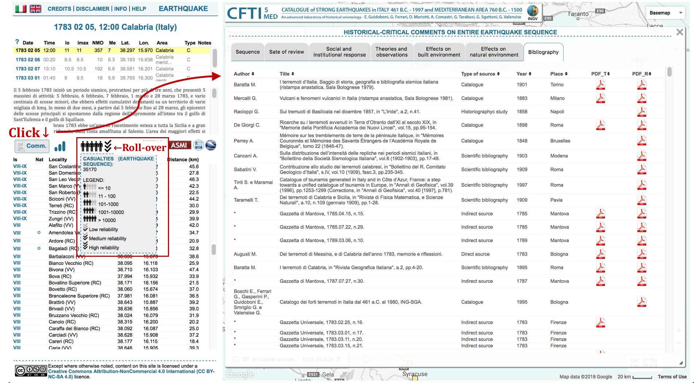
An icon to the right of the “Comm.” button indicates the level of review of the earthquake sequence, with the following meaning:
- high level of review
- medium level of review
- low level of review
For some earthquakes another icon is shown to the left of the CPTI15-DBMI15 icon, specifying whether the earthquake is new or instead if some parameters were modified with respect to the previous version of the CFTI catalogue. There are three possible cases:
 earthquake was not included in version 4 of CFTI
earthquake was not included in version 4 of CFTI earthquake was re-investigated with respect to version 4 of CFTI
earthquake was re-investigated with respect to version 4 of CFTI earthquake information was changed and/or corrected with respect to version 4 of CFTI
earthquake information was changed and/or corrected with respect to version 4 of CFTI
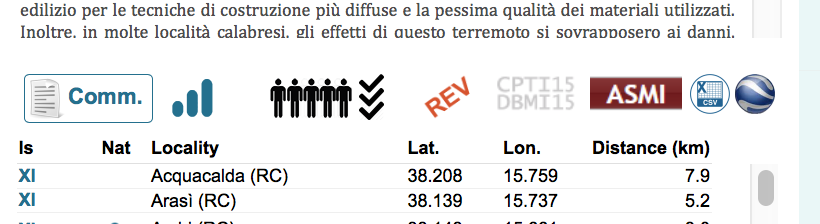
The page of an individual locality reports the earthquake history of the given locality, intended as the list of all earthquakes of the Catalogue that caused effects on the built and/or natural environment at the given locality.
The page consists of a timeline chart, a table and a map, showing all events in the earthquake history at the locality and the locality (the latter shown with a yellow drop-shaped icon). The timeline chart is the same as the one shown in the access by earthquake page of the Catalogue, except that in this chart all bars are clickable. As shown in the figure below, when clicking on a bar a table row (intensity, dot of effects on natural environment or earthquake date) or a marker on the map, an informative window is displayed, containing epicentral information on the selected earthquake (including a link to the corresponding page) and a description of the effects of the given earthquake at the given locality (on the built and natural environment). The description of the effects on the built environment and the list of effects on the natural environment can be seen also at mouse roll-over on the intensity and (when present) on the dot indicating the effects on the natural environment in the table. Note that for the effects on the natural environment, the text displayed at roll-over is only a list of the types of effects, while the informative window contains both the list and a descriptive text (and relevant bibliography).
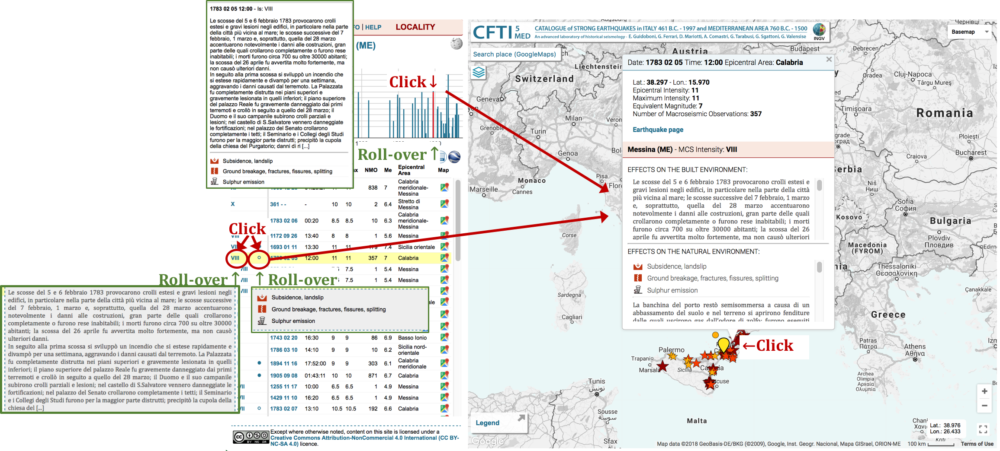
The table lists all earthquakes causing effects (on the built and/or natural environment) at the given locality. The left part of the table contains information on the effects at the locality, while the right part contains the parameters of the earthquakes causing the effects (the two parts are separated by a vertical grey line). The table lists the following information:
- Is: MCS intensity at site, for the given earthquake. In addition to the MCS degrees, in some cases other letters are used, based on the following list:
- S(V) strongly felt, but lacking evidence to support or deny the occurrence of damage
- F(IV-V) felt
- NF not felt
- G generic indication of damage at a specific site
- N no evidence found in contemporary sources
- NC unrated: please refer to the analytical comments for further info Effects on a single building:
- A(IX) collapse or extensive damage to the load bearing walls
- B(VIII) collapse of the top portion of the building (lantern, dome, gable, etc.)
- C(VII) partial collapse of the roof, vaults, apsidal vault, etc.
- D(VI) falling eaves, cracking of the external walls
- E(VI-VII) report of generic damage to the building
- Nat: earthquake-induced effects on the natural environment. When reported, they are indicated with a full dot (if associated with a single earthquake) or a circle (if associated with the entire earthquake sequence)
- Date: earthquake origin date (year month day)
- Time: earthquake origin time expressed as Greenwich Mean Time (hour:minutes:seconds)
- Io: epicentral intensity (MCS)
- Imax: maximum intensity (MCS)
- NMO: Number of Macroseismic Observations for the earthquake
- Me: equivalent magnitude based on macroseismic observations
- Epicentral area
- Map: button that allows the user to display on the map the distribution of the earthquake effects (see the following section "Map of effects").
When, for the given locality, there are earthquake sequences known to have caused effects on the natural environment (and not on the built environment, therefore no MCS intensity is reported) that cannot be associated with an individual shock of the sequence, another table is shown below the title "Earthquake sequences associated with effects on the natural environment only at this site", with the following columns:
- Nat: : effects on the natural environment associated with the entire earthquake sequence (as indicated by the circle)
- Date: earthquake origin date (year month day) and link to corresponding individual earthquake page, for all earthquakes of the sequence
- Time: earthquake origin times expressed as Greenwich Mean Time (hour:minutes:seconds)
- Io: epicentral intensity (MCS) of all earthquakes of the sequence
- Me: equivalent magnitude based on macroseismic observations for all earthquakes of the sequence
- Epicentral area of all earthquakes of the sequence
- Map: buttons that allow the user to display on the map the distribution of the effects of each earthquake of the sequence (see the following section "Map of effects").
Three possible cases of tables structure may occur, shown in the figure below:
- a table listing individual earthquakes associated with effects on the built environment and, when reported, effects on the natural environment. Each line of the table corresponds to one epicenter on the map;
- a table listing earthquake sequences associated with effects on the natural environment at this site, that cannot be associated with a single shock of the sequence. The epicenters of these earthquakes are not shown in the map;
- two tables, the top one corresponding to that described in a) and the other corresponding to that described in b). The map shows only the epicenters listed in the top table only.
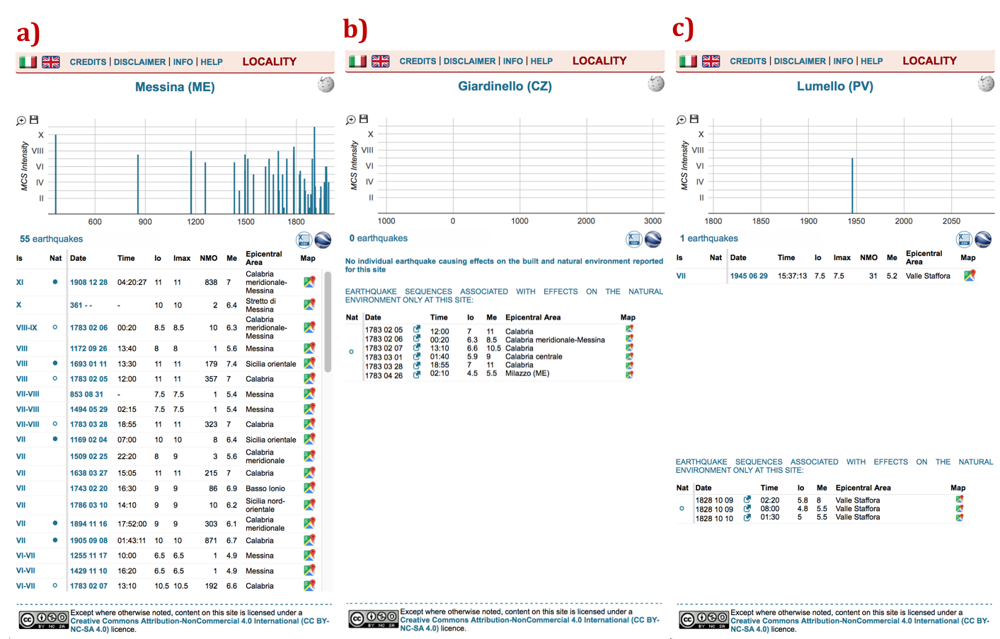
On page startup the map shows the epicenters of the earthquakes that caused effects at the locality. The user can browse the map distribution of all effects caused by each event listed in the table by clicking the buttons in the column "Map". The current locality is displayed with a drop-shaped icon. All icons are color-coded by MCS intensity, following the scheme shown in the legend located in the bottom-left corner of the map. The icons with green edge indicate effects on the natural environment. Similarly to the page available for any individual earthquake, a link in the map legend takes the user to a description of the MCS scale (Mercalli-Càncani-Sieberg 1932).
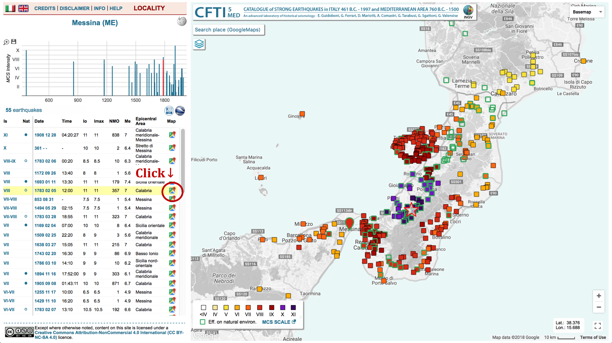
If the locality has changed its name over time, it is shown in the title with its current name and with the historical name(s) in parentheses. A note indicates the date of the name change(s). The note may contain also information on site changes of the locality. In the maps showing earthquake effects, instead, the locality appears with the name it had at the time of the earthquake. One of the most complex cases, that of Vibo Valentia (for which CFTI5Med reports three different denominations), is shown in the figure below.
The user can also access more information on the locality through a direct link to the corresponding Wikipedia webpage, located next to the locality name in the title of the page (top-left frame).
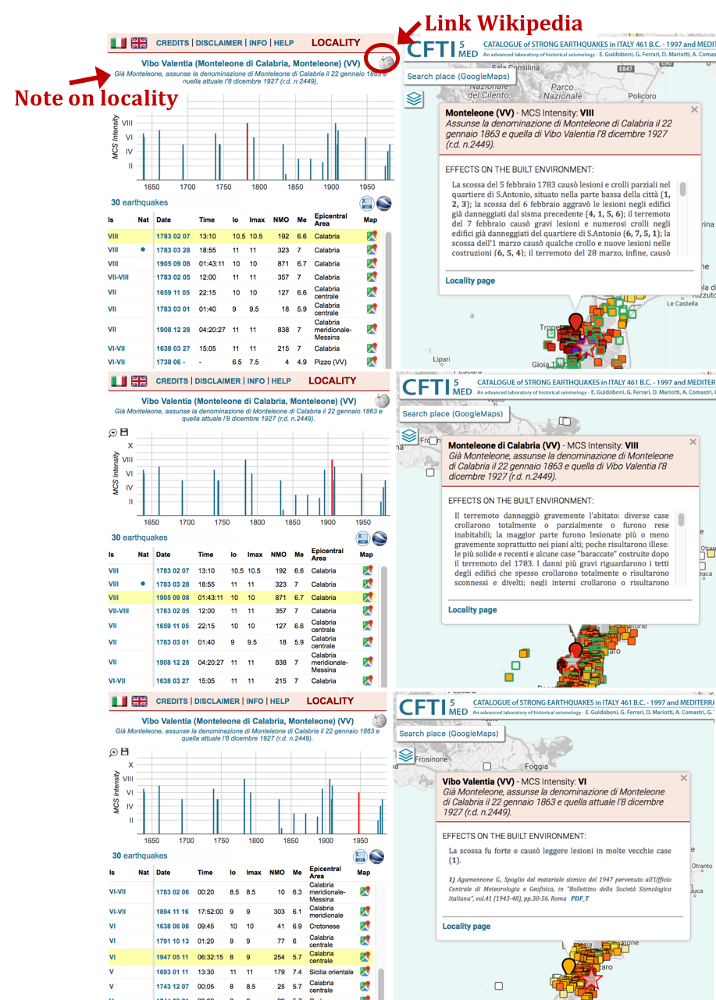